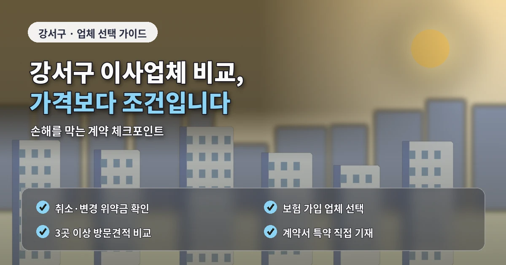

서울 강서구포장이사추천 견적 차이 이유
강서구 포장이사는
동네별 주거 환경이 크게 달라
견적 기준을 꼼꼼히 확인해야 합니다.
마곡동은 신축 오피스텔과 아파트가 많고,
화곡동은 빌라와 다세대주택이 많으며,
등촌동과 가양동은 대단지 아파트가
함께 자리한 지역입니다.
방화동처럼 공항 주변 도로와
차량 이동이 많은 곳도 있어
이사 시간과 동선 계획이 중요합니다.
비용과 견적이 달라지는 핵심 기준
강서구 포장이사 비용은
이사 거리보다 현장 조건에서
차이가 크게 나는 경우가 있습니다.
건물 앞 주차가 가능한지,
화물차가 지하주차장에 들어갈 수 있는지,
엘리베이터 예약이 필요한지,
사다리차 설치가 가능한지에 따라
작업 방식이 달라집니다.
특히 마곡동 오피스텔이나
신축 아파트는 관리 규정이 세부적인 경우가 많습니다.
이사 가능 시간,
보양 작업,
엘리베이터 사용,
차량 대기 위치를 사전에 맞춰야
당일 작업이 원활하게 진행됩니다.
강서구 포장이사 업체추천을 받을 때는
가격만 확인하지 말고
작업 범위가 어디까지 포함되는지
구체적으로 확인해야 합니다.
업체 비교 전 확인해야 할 사항
주방 포장,
의류 박스,
가전 보호,
침대 분해 조립,
장롱 이동,
냉장고 정리 범위가
업체마다 다를 수 있습니다.
포장이사 비교견적은
최소 3곳 이상 받는 것이 좋습니다.
다만 단순히 가장 저렴한곳을 고르기보다
같은 조건을 기준으로 비교해야 합니다.
A업체는 사다리차를 포함하고,
B업체는 별도 계산한다면
총액만 보고는 실제 차이를 알기 어렵습니다.
견적서에는 차량 대수,
작업 인원,
포장재 제공 여부,
추가비 발생 조건,
파손 보상 기준이 들어가야 합니다.

말로만 안내받은 내용은
현장 상황에 따라 달라질 수 있으므로
중요한 조건은 반드시 기록해두는 것이 안전합니다.
추가비용을 줄이는 준비 방법
강서구는 주거 형태가 다양하기 때문에
짐의 종류를 정확히 전달해야 합니다.
가전제품이 많은 집,
책과 의류가 많은 집,
가구 분해가 필요한 집은
같은 평수라도 작업 시간이 달라질 수 있습니다.
이사 전에는 가져갈 물건과 버릴 물건을
구분해두는 것이 좋습니다.
불필요한 짐이 줄어들면
차량 크기와 인력 배치가 달라질 수 있고,
비용 부담도 낮출 수 있습니다.
사다리차 사용 여부도
강서구 포장이사에서 중요한 항목입니다.
도로 폭이 넓은 아파트 단지는
사다리차 설치가 쉬운 편이지만,
빌라 밀집 지역은 차량을 세울 공간이
부족할 수 있습니다.
계약 전 마지막 체크포인트
이 경우 계단 운반이나
엘리베이터 운반으로 바뀔 수 있으므로
상담 단계에서 확인해야 합니다.
이사 날짜는 비용에 영향을 줍니다.
월말과 주말은 예약이 몰리기 쉽고,
손 없는 날은 견적이 높아질 수 있습니다.
가능하다면 평일,
월중 일정,
오전 시간대를 함께 문의해보는 것이 좋습니다.
강서구 포장이사는
지역별 주거 특성을 이해하고
견적 조건을 맞춰 비교하는 것이 핵심입니다.
마곡, 화곡, 등촌, 가양, 방화처럼
동네별 환경이 다르기 때문에
현장 조건을 자세히 전달해야
정확한 비용을 확인할 수 있습니다.
강서구는 생활권이 넓고
동네별 주거 형태가 달라
포장이사 견적을 받을 때
지역 세부 조건을 함께 봐야 합니다.
마곡동처럼 신축 건물이 많은 곳은
관리 규정과 주차 동선이 중요하고,
화곡동처럼 빌라가 많은 지역은
골목 진입과 계단 이동 여부가 중요합니다.
강서구 포장이사 비용을 비교할 때는
작업 인원과 차량 대수를 따로 확인해야 합니다.
같은 24평 이사라도
짐이 적으면 차량이 줄 수 있고,
책이나 가구가 많으면
추가 차량이 필요할 수 있습니다.
견적 상담 시에는
가전 크기와 설치 위치를 함께 알려주는 것이 좋습니다.
업체 선택에서는
마무리 정리 범위를 확인해야 합니다.
포장이사는 포장과 운반만이 아니라
도착지에서 가구와 박스를
어디까지 배치하는지가 중요합니다.
강서구 포장이사추천 정보를 볼 때는
공항 주변 도로 상황이나
출퇴근 시간대 차량 혼잡도 고려해야 합니다.
가능하다면 오전 작업,
평일 일정,
관리사무소 예약 시간을 함께 조율하는 것이 좋습니다.
강서구 포장이사 동네별 확인 포인트
강서구는 마곡, 화곡, 등촌, 가양, 방화의 주거 조건이 다릅니다.
마곡동은 신축 건물의 관리 규정이 중요하고,
화곡동은 골목 진입과 계단 이동 여부를 봐야 합니다.
등촌동과 가양동은 대단지 아파트의 엘리베이터 예약이
견적과 일정 조율에 영향을 줄 수 있습니다.
또한 공항과 가까운 생활권은 시간대에 따라
차량 이동이 지연될 수 있으므로
오전 작업인지 오후 작업인지도 확인하는 것이 좋습니다.
업체가 지역별 동선을 잘 이해하고 있다면
작업 시간 예측과 추가비 안내가 더 정확해질 수 있습니다.
자주 묻는 질문
A. 오피스텔, 빌라, 대단지 아파트 등 주거 형태가 다양하기 때문입니다.
A. 엘리베이터 예약, 보양 규정, 차량 대기 위치를 확인해야 합니다.
A. 사다리차 포함 여부, 작업 인원, 포장 범위를 같은 기준으로 봐야 합니다.